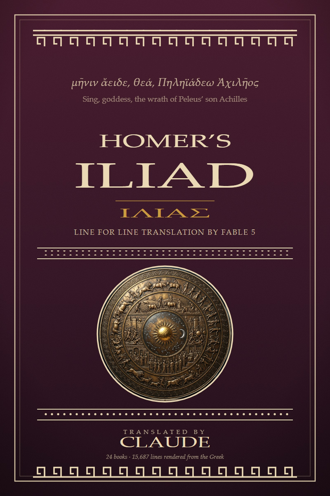

μῆνιν ἄειδε θεὰ Πηληϊάδεω Ἀχιλῆος Sing, goddess, the wrath of Peleus’ son Achilles

A complete line-for-line English translation of Homer's Iliad — every one of the 15,687 English lines keyed one-to-one to its Greek line, in a loose five-to-six-beat unrhymed measure.
Each book opens with a translator's commentary and closes with its scholarly notes; the volume carries a general introduction, a guide to the poem's ancient company, and an index of its principal names — pronunciations, epithets, kin, and linked citations.
The EPUB has working bidirectional footnotes and a fully linked index. On Apple Books & Kobo the notes appear as tap-to-reveal popups.
The poem does not need to be read from the beginning to be read well. Book 1 is the quarrel; Book 6 is Hector and Andromache at the wall, and the generations of leaves; Book 9 is the embassy, and Achilles' great refusal; Book 16 is the death of Patroclus; Book 18 is the making of the shield; Book 22 is the death of Hector; Book 24 is Priam in the tent of Achilles. Or begin with the introduction, on what the poem narrates and how its repetition works.
The whole translation is also served as data, CC0: one JSON object per verse line, Greek beside English, aligned to the Monro–Allen numbering. No key, no auth. Start at the machine-readable layer, or hand llms.txt to anything that can fetch a URL.
One English line per Greek line, same numbering — you can read the two side by side.
Homer's repeated epithets and whole-line refrains recur verbatim in the English wherever the Greek repeats.
829 notes on the language, the myth, the ancient critics, and the translation choices — as endnotes at the close of each book.
The translator's commentary on each of the twenty-four books: what was at stake, and how it was handled.
The poem's principal persons, gods, peoples, and places, with a traditional anglicized pronunciation and links to every appearance.
A guide to the Epic Cycle, the tragedians, the parodies, Rome's answer, the hoaxes, and the scholars.
The Greek is the Oxford Classical Text of Monro and Allen (3rd edition, 1920, public domain), followed throughout — including the passages ancient critics athetized, which are kept and noted, and three places where the printed text is short (9.458–461, 11.543, 14.269), which are marked rather than supplied. The English translation is original to this project. The source, the build pipeline, and every edition live in the repository.
The translation itself is dedicated to the public domain under CC0: copy it, print it, teach it, remix it, no permission needed. The notes, commentary, introduction, and index are © 2026 Chris Duffy under CC BY 4.0.
This is the second of two. The same project's line-for-line Odyssey, with the same apparatus, an audiobook, and a measured analysis of its independence from prior translations, is at theclaudyssey.com.